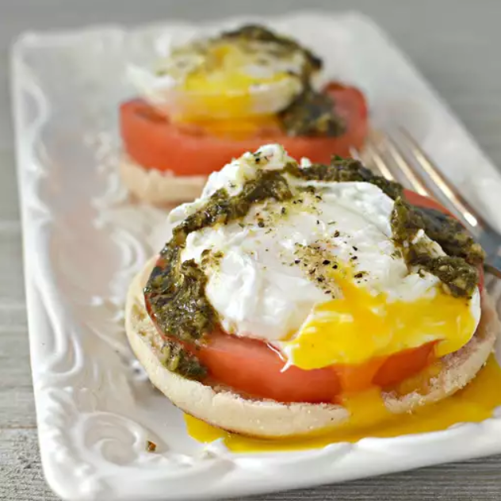

Poached Eggs Caprese
These poached caprese eggs are a delicious dish inspired by eggs Benedict with mozzarella, tomatoes, and pesto.
- Fill a large saucepan with 2 to 3 inches water and bring to a boil over high heat.
Reduce heat to medium-low, pour in vinegar and 2 teaspoons salt, and keep water at a gentle simmer.
- While waiting for water to simmer, place 1 mozzarella cheese slice and 1 tomato slice onto each English muffin half.
Cook in a toaster oven until cheese softens and English muffin has toasted, about 5 minutes.
- Crack an egg into a small bowl. Holding the bowl just above water's surface, gently slip egg into simmering water. Repeat with remaining eggs.
Poach eggs until whites are firm and yolks have thickened but are not hard, 2 to 3 minutes.
Remove eggs from water with a slotted spoon and dab them on a kitchen towel to remove excess water.
- To assemble, place a poached egg on top of each English muffin.
Spoon 1 teaspoon pesto sauce onto each egg and sprinkle with salt.
Wróć
